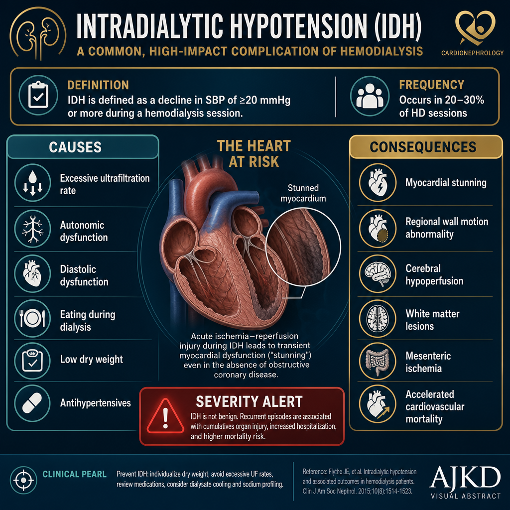
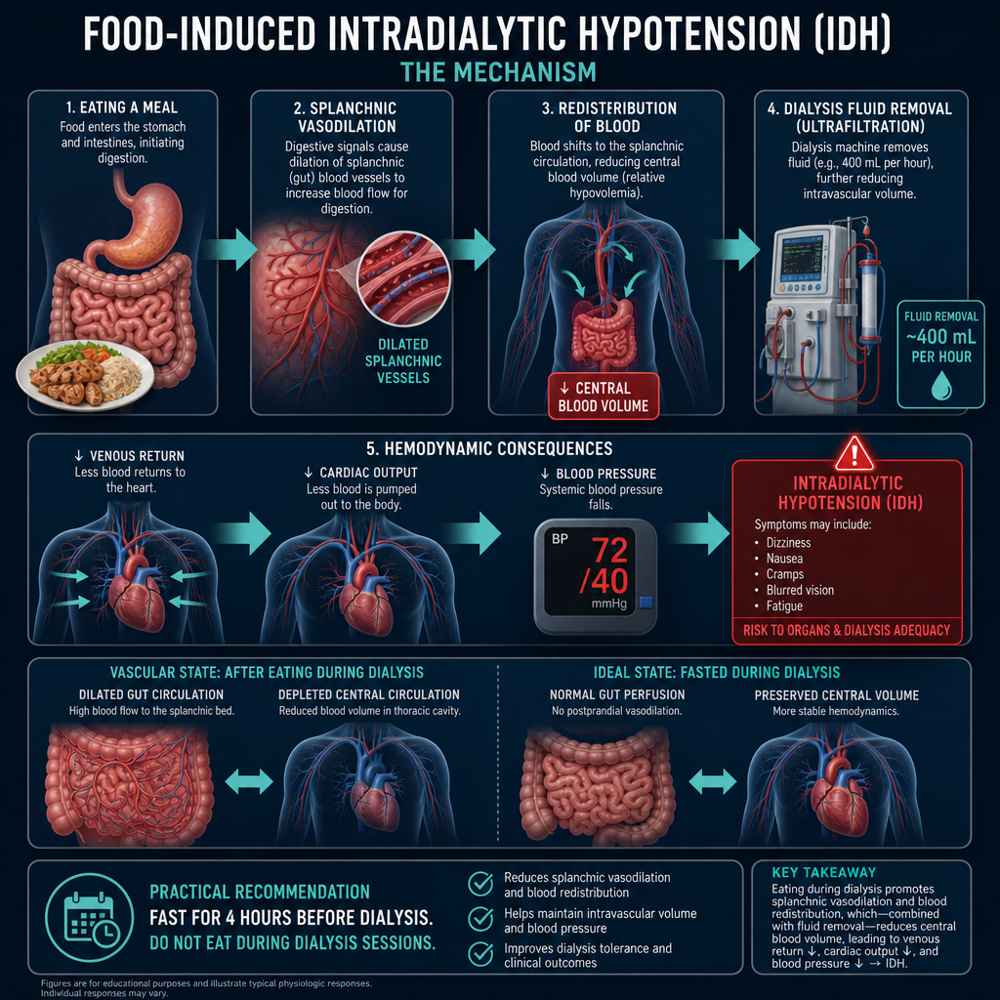
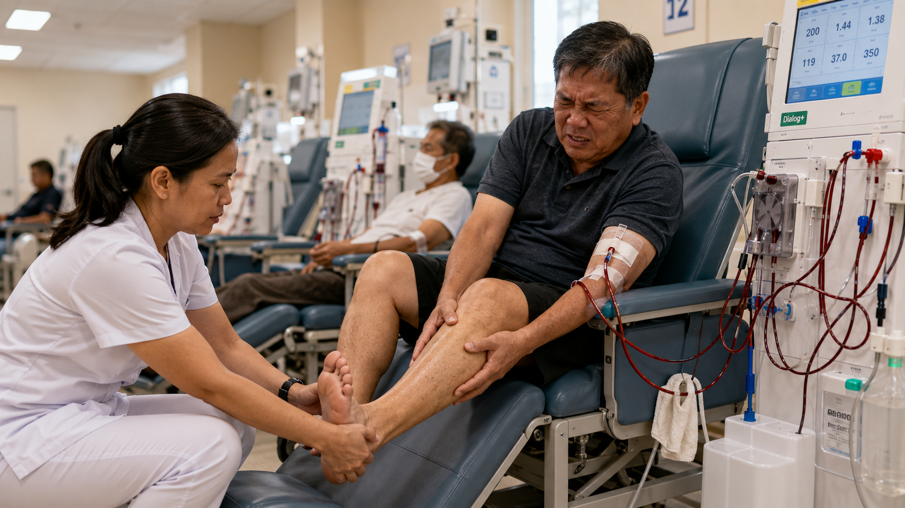
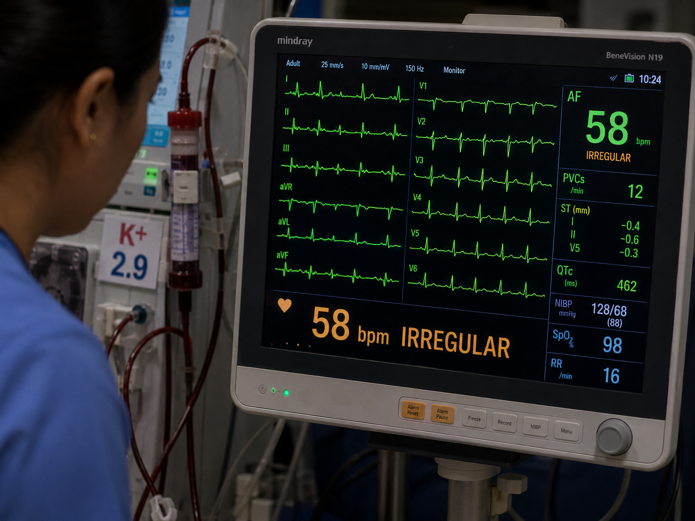
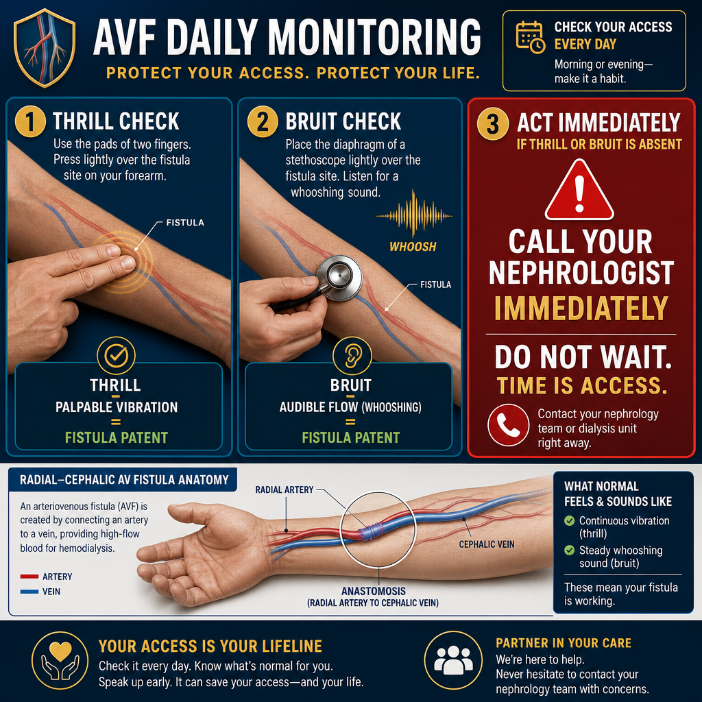
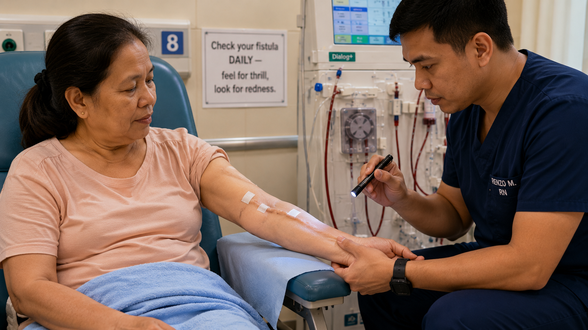
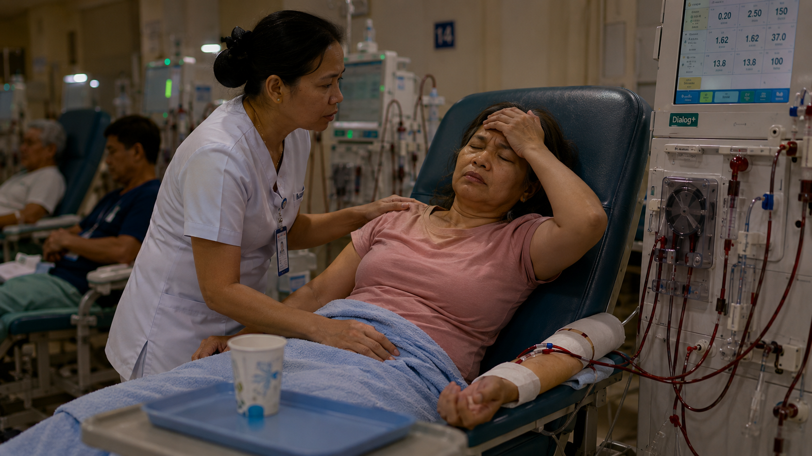
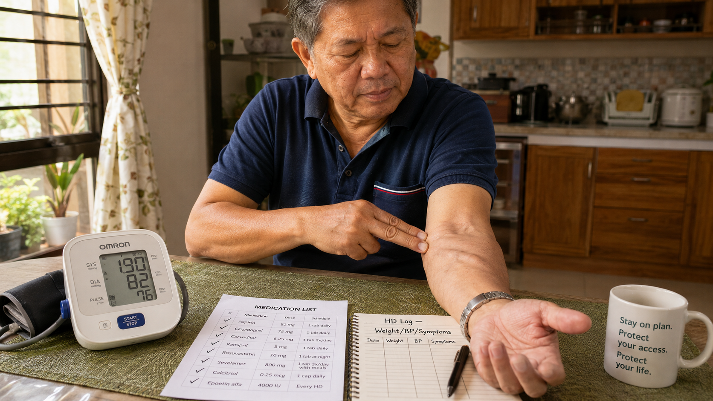

Why HD Complications Occur — and Why They Matter
Bakit Nangyayari ang mga Komplikasyon sa HD — at Bakit Mahalaga Ito
Ngano Mahitabo ang mga Komplikasyon sa HD — ug Ngano Importante Kini
Bakit Nangyayari deng Komplikasyon sa HD — at Bakit Mahalaga Ini
Hemodialysis compresses 168 hours of kidney function into three 4-hour sessions per week — subjecting the body to rapid fluid shifts, electrolyte swings, blood pressure changes, and immune activation that no natural organ produces. Up to 20–30% of all HD sessions involve at least one intradialytic complication. Recognizing them early — and understanding their causes — prevents escalation to emergencies.
Pinaiikli ng hemodialysis ang 168 oras ng trabaho ng bato sa tatlong 4-oras na session bawat linggo — na nagsasanhi sa katawan ng mabilis na pagbabago ng tubig, pabagu-bagong electrolytes, pagbabago ng blood pressure, at pag-activate ng immune system na hindi ginagawa ng anumang natural na organo. Hanggang 20–30% ng lahat ng HD session ay may kahit isang komplikasyon habang nagda-dialysis. Ang maagang pagkilala sa mga ito — at pag-unawa sa mga sanhi — ay pumipigil sa paglala tungo sa emergency.
Ang hemodialysis nagpahimuot sa 168 ka oras nga trabaho sa bato ngadto lang sa tulo ka 4 ka oras nga sesyon matag semana — nagpailalom sa lawas sa dali nga pagbalhin sa tubig, pagbag-o sa electrolytes, pagbag-o sa presyon sa dugo, ug pag-activate sa immune system nga walay natural nga organo makahimo. Hangtod sa 20–30% sa tanang sesyon sa HD adunay labing menos usa ka komplikasyon atol sa dialysis. Ang pag-ila niini sa sayo — ug pagsabot sa mga hinungdan — makalikay sa pagkahimong emergency.
Pinaiikli ning hemodialysis ing 168 oras ning obran nining batu sa tatlong 4-oras na session bawat lutu — na nagsasanhi sa bangkî ning mabilis na pagbabago nining danum, pabagu-bagong electrolytes, pagbabago ning blood pressure, at pag-activate ning immune system na ali ginagawa ning anumang natural na organo. Anggang 20–30% ning lahat ning HD session ya may kahit metung a komplikasyon habang nagda-dialysis. Ing maagang pagkilala sa deng ini — at pag-unawa sa deng sanhi — ya pumipigil sa paglala tungo sa emergency.

Intradialytic hypotension (IDH) is the most common and most serious acute complication — it is associated with myocardial stunning, cerebral hypoperfusion, and accelerated cardiovascular mortality in dialysis patients.
Ang intradialytic hypotension o IDH (pagbaba ng blood pressure habang nagda-dialysis) ang pinakakaraniwan at pinakaseryosong acute na komplikasyon — ito ay nauugnay sa myocardial stunning (pansamantalang paghina ng puso), cerebral hypoperfusion (kulang na daloy ng dugo sa utak), at pinabilis na pagkamatay sa sakit sa puso ng mga pasyenteng nagda-dialysis.
Ang intradialytic hypotension (IDH) o pagkaubos sa presyon atol sa dialysis mao ang labing komon ug labing seryoso nga komplikasyon — kini konektado sa myocardial stunning (pagkastun sa kasingkasing), kakulang sa dugo sa utok, ug mas paspas nga pagkamatay sa kasingkasing sa mga pasyente sa dialysis.
Ing intradialytic hypotension o IDH (pagbaba ning blood pressure habang nagda-dialysis) ing pinakakaraniwan at pinakaseryosong acute na komplikasyon — ini ya nauugnay sa myocardial stunning (pansamantalang paghina nining pusu), cerebral hypoperfusion (kulang na daloy nining daya sa utak), at pinabilis na pagkamatay sa sakit sa pusu ning deng pasyenteng nagda-dialysis.
Intradialytic Hypotension (IDH)
Intradialytic Hypotension (IDH)
Intradialytic Hypotension (IDH)
Intradialytic Hypotension (IDH)
A drop in systolic BP ≥20 mmHg OR systolic BP <90 mmHg during HD
Pagbaba ng systolic BP ng ≥20 mmHg O systolic BP na <90 mmHg habang nagda-dialysis
Pagkaubos sa systolic BP ≥20 mmHg O systolic BP <90 mmHg atol sa HD
Pagbaba ning systolic BP ning ≥20 mmHg O systolic BP na <90 mmHg habang nagda-dialysis
IDH is not just discomfort — every episode causes myocardial stunning (transient wall motion abnormalities detectable on echo), silent cerebral ischemia, and gut ischemia from splanchnic vasoconstriction. Patients with frequent IDH have 40% higher cardiovascular mortality than those without. The cumulative damage from repeated episodes explains why IDH is considered a silent killer in dialysis.
Ang IDH ay hindi lang discomfort — bawat episode ay nagdudulot ng myocardial stunning (pansamantalang kahinaan ng pader ng puso na nakikita sa echo), tahimik na cerebral ischemia (kulang na dugo sa utak), at gut ischemia mula sa splanchnic vasoconstriction (pagkitid ng mga daluyan ng dugo sa tiyan). Ang mga pasyenteng madalas magkaroon ng IDH ay may 40% na mas mataas na pagkamatay sa sakit sa puso kaysa sa mga wala nito. Ang natitipon na pinsala mula sa paulit-ulit na episode ang dahilan kung bakit ang IDH ay itinuturing na tahimik na mamamatay-tao sa dialysis.
Ang IDH dili lang kasamok — ang matag episode nagpahinabo og myocardial stunning (temporaryo nga kaluya sa paril sa kasingkasing nga makita sa echo), hilom nga kakulang sa dugo sa utok, ug kakulang sa dugo sa tinai tungod sa pagkipot sa mga ugat sa tiyan. Ang mga pasyente nga kanunay'ng adunay IDH adunay 40% mas taas nga kamatayon sa kasingkasing kaysa walay IDH. Ang natipon nga kadaot gikan sa balik-balik nga mga episode nagpasabot ngano ang IDH giisip nga hilom nga mamumuno sa dialysis.
Ing IDH ya ali lang discomfort — bawat episode ya nagdudulot ning myocardial stunning (pansamantalang kahinaan ning pader nining pusu na nakikita sa echo), tahimik a cerebral ischemia (kulang na daya sa utak), at gut ischemia mula sa splanchnic vasoconstriction (pagkitid ning deng daluyan nining daya sa tiyan). Deng pasyenteng madalas magkaroon ning IDH ya may 40% na mas matas a pagkamatay sa sakit sa pusu kaysa sa deng ala nini. Ing natitipon na pinsala mula sa paulit-ulit na episode ing dahilan nung bakit ing IDH ya itinuturing na tahimik a mamamatay-tao king dialysis.
During episode: Lower head of bed (Trendelenburg) · Reduce or stop ultrafiltration · 100–200 mL normal saline bolus · If no recovery — end session and evaluate for cardiac cause.

Eating before or during HD is one of the most common and preventable causes of intradialytic hypotension. The physiological mechanism is clear and direct — food-induced splanchnic vasodilation diverts blood from the central circulation exactly when the dialysis machine is removing fluid.
Ang pagkain bago o habang nagda-HD ay isa sa pinakakaraniwan at maiiwasang sanhi ng intradialytic hypotension. Malinaw at direkta ang mekanismo ng katawan — ang splanchnic vasodilation na dulot ng pagkain (pagbukas ng mga daluyan ng dugo sa tiyan para sa pagtunaw) ay naglilihis ng dugo mula sa sentral na sirkulasyon sa mismong oras na tinatanggal ng dialysis machine ang tubig.
Ang pagkaon sa wala pa o atol sa HD usa sa labing komon ug malikayan nga hinungdan sa intradialytic hypotension. Ang mekanismo klaro ug direkta — ang pagkaon nagpahanap sa mga ugat sa tiyan (splanchnic vasodilation) ug nagbalhin sa dugo palayo sa sentral nga sirkulasyon eksakto sa panahon nga ang makina sa dialysis nagkuha sa tubig.
Ining pamangan bago o habang nagda-HD ya isa king pinakakaraniwan at maiiwasang sanhi ning intradialytic hypotension. Malinaw at direkta ing mekanismo nining bangkî — ing splanchnic vasodilation na dulot nining pamangan (pagbukas ning deng daluyan nining daya sa tiyan para king pagtunaw) ya naglilihis nining daya mula sa sentral na sirkulasyon sa mismong oras na tinatanggal ning dialysis machine ining danum.
Muscle Cramps
Muscle Cramps (Pulikat)
Muscle Cramps (Pagpamalikog sa Kaunoran)
Muscle Cramps (Pulikat)
Painful involuntary muscle contractions — most commonly in legs, feet, and hands
Masakit na di-sinasadyang pag-urong ng kalamnan — kadalasan sa mga binti, paa, at kamay
Sakit nga dili boluntaryo nga pagkontrakto sa kaunoran — kasagaran sa mga bitiis, tiil, ug kamot
Masakit na di-sinasadyang pag-urong ning kalamnan — kadalasan sa deng binti, paa, at kamay
Dialysis cramps occur when ultrafiltration removes fluid faster than the tissue compartments can replenish the intravascular space — causing relative hypovolemia and ischemic muscle contraction. Low serum magnesium (common in dialysis patients), low plasma sodium, and carnitine deficiency also contribute. Nocturnal cramps after HD are particularly common and disrupt sleep.
Ang mga pulikat sa dialysis ay nangyayari kapag ang ultrafiltration (pagtanggal ng tubig) ay nagtanggal ng tubig nang mas mabilis kaysa sa kayang palitan ng mga tissue compartment ang intravascular space — na nagdudulot ng relative hypovolemia (kulang na dugo sa mga ugat) at ischemic na pag-urong ng kalamnan. Ang mababang serum magnesium (karaniwan sa mga pasyenteng nagda-dialysis), mababang plasma sodium, at kakulangan sa carnitine ay nakakadagdag din. Ang mga pulikat sa gabi pagkatapos ng HD ay partikular na karaniwan at nakakasira sa tulog.
Ang mga cramps sa dialysis mahitabo kung ang ultrafiltration nagkuha sa tubig mas paspas kaysa mahimo sa mga tisyu pagpuli sa intravascular space — nagpahinabo og relatibo nga kakulang sa dugo ug ischemic nga kontraksiyon sa kaunoran. Ang ubos nga magnesium sa dugo (komon sa mga pasyente sa dialysis), ubos nga sodium sa plasma, ug kakulang sa carnitine nakatampo usab. Ang mga cramps sa kagabhion human sa HD labi na ka komon ug nagsamok sa tulog.
Deng pulikat king dialysis ya nangyayari nung ing ultrafiltration (pagtanggal nining danum) ya nagtanggal nining danum nang mas mabilis kaysa sa kayang palitan ning deng tissue compartment ing intravascular space — na nagdudulot ning relative hypovolemia (kulang na daya sa deng ugat) at ischemic na pag-urong ning kalamnan. Ing mababang serum magnesium (karaniwan sa deng pasyenteng nagda-dialysis), mababang plasma sodium, at kakulangan sa carnitine ya nakakadagdag din. Deng pulikat sa gabi kapabanuan ning HD ya partikular na karaniwan at nakakasira sa tulog.
Prevention: Reassess dry weight upward if cramps are frequent · Increase dialysate sodium slightly · Magnesium supplementation (dialysate Mg 0.5–0.75 mmol/L or oral) · L-Carnitine 20 mg/kg IV post-HD (strong evidence — reduces cramp frequency 50–60%) · Stretching exercises before and after HD · Vitamin E 400 IU/day (modest benefit, safe).
L-Carnitine for dialysis cramps — underused but highly effective
L-Carnitine para sa pulikat sa dialysis — kulang ang paggamit ngunit lubos na epektibo
L-Carnitine para sa mga cramps sa dialysis — dili kaayo gamiton pero epektibo kaayo
L-Carnitine para king pulikat king dialysis — kulang ing paggamit ngarud lubos na epektibo
Carnitine is lost during dialysis and dietary intake is low on the typical renal diet. Carnitine deficiency causes skeletal muscle dysfunction, cramps, weakness, and cardiac dysfunction. IV L-Carnitine 20 mg/kg given into the venous return line at the end of each HD session reduces intradialytic cramps by 50–60% in clinical trials. It also improves erythropoietin response — reducing ESA dose requirements by 30–40% in EPO-resistant anemia. Available in the Philippines — ask your nephrologist.
Ang carnitine ay nawawala habang nagda-dialysis at mababa ang nakukuha sa pagkain sa karaniwang renal diet. Ang kakulangan sa carnitine ay nagdudulot ng dysfunction ng skeletal muscle, pulikat, panghihina, at dysfunction ng puso. Ang IV L-Carnitine na 20 mg/kg na ibinibigay sa venous return line sa dulo ng bawat HD session ay nagpapababa ng pulikat habang nagda-dialysis ng 50–60% sa mga clinical trial. Pinapabuti rin nito ang tugon sa erythropoietin — nagpapababa ng pangangailangan sa ESA dose ng 30–40% sa EPO-resistant anemia. Available sa Pilipinas — tanungin ang iyong nephrologist.
Ang Carnitine nawala atol sa dialysis ug ang pagkaon niini ubos sa tipikal nga renal diet. Ang kakulang sa carnitine nagpahinabo og disfunsiyon sa kaunoran, cramps, kaluya, ug disfunsiyon sa kasingkasing. Ang IV L-Carnitine 20 mg/kg nga gihatag sa venous return line sa katapusan sa matag sesyon sa HD nagpamenos sa mga cramps atol sa dialysis og 50–60% sa mga clinical trials. Nagpauswag usab kini sa tubag sa erythropoietin — nagpamenos sa gikinahanglan nga dosis sa ESA og 30–40% sa EPO-resistant anemia. Anaa sa Pilipinas — pangutan-a ang imong nephrologist.
Ing carnitine ya nawaala habang nagda-dialysis at mababa ing nakukuha king pamangan sa karaniwang renal diet. Ing kakulangan sa carnitine ya nagdudulot ning dysfunction ning skeletal muscle, pulikat, panghihina, at dysfunction nining pusu. Ing IV L-Carnitine na 20 mg/kg na ibinibigay sa venous return line sa dulo ning bawat HD session ya nagpapababa ning pulikat habang nagda-dialysis ning 50–60% sa deng clinical trial. Pinapabuti rin nini ing tugon sa erythropoietin — nagpapababa ning pangangailangan sa ESA dose ning 30–40% sa EPO-resistant anemia. Available king Pilipinas — tanungin ing iyung nephrologist.

Cardiac Arrhythmias During Dialysis
Cardiac Arrhythmias Habang Nagda-Dialysis (Iregular na Tibok ng Puso)
Cardiac Arrhythmias Atol sa Dialysis (Dili Regular nga Tibok sa Kasingkasing)
Cardiac Arrhythmias Habang Nagda-Dialysis (Iregular na Tibok ning Pusu)
Abnormal heart rhythms triggered by electrolyte shifts during HD
Abnormal na ritmo ng puso na nati-trigger ng pagbabago ng electrolytes habang nagda-HD
Dili normal nga ritmo sa kasingkasing nga gipahinabo sa pagbag-o sa electrolytes atol sa HD
Abnormal na ritmo nining pusu na nati-trigger ning pagbabago ning electrolytes habang nagda-HD
The rapid potassium removal during HD (K+ drops from 5+ to 3.5 mEq/L in 4 hours) combined with the simultaneous removal of magnesium creates an electrophysiologically unstable cardiac environment. This is why cardiac arrests are most frequent on Monday mornings after the 68-hour weekend inter-dialytic gap — when K+ is highest and rapid correction is most abrupt.
Ang mabilis na pagtanggal ng potassium habang nagda-HD (bumababa ang K+ mula 5+ hanggang 3.5 mEq/L sa loob ng 4 na oras) kasabay ng pagtanggal ng magnesium ay lumilikha ng electrophysiologically unstable na kapaligiran sa puso. Ito ang dahilan kung bakit ang mga cardiac arrest ay pinakamadalas tuwing Lunes ng umaga pagkatapos ng 68-oras na weekend inter-dialytic gap — kapag pinakamataas ang K+ at pinakabiglaan ang mabilis na pag-aayos.
Ang paspas nga pagkuha sa potassium atol sa HD (K+ mibaba gikan sa 5+ ngadto sa 3.5 mEq/L sulod sa 4 ka oras) inubanan sa dungan nga pagkuha sa magnesium nagmugna og dili lig-on nga electrical nga kahimtang sa kasingkasing. Mao kini ang hinungdan ngano ang mga cardiac arrest labing kanunay sa Lunes sa buntag human sa 68 ka oras nga gintang sa katapusan sa semana — kung ang K+ pinakataas ug ang paspas nga pagkorihir labing kalit.
Ing mabilis na pagtanggal ning potassium habang nagda-HD (bumababa ing K+ mula 5+ anggang 3.5 mEq/L sa loob ning 4 na oras) kasabay ning pagtanggal ning magnesium ya lumilikha ning electrophysiologically unstable na kapaligiran sa pusu. Ini ing dahilan nung bakit deng cardiac arrest ya pinakamadalas tuwing Lunes ning umaga kapabanuan ning 68-oras na weekend inter-dialytic gap — nung pinakamataas ing K+ at pinakabiglaan ing mabilis na pag-aayos.
During episode: Standard ACLS protocols · Bicarbonate dialysate preferred over acetate · Cardiac monitoring during all HD sessions.

Dialysis Access Complications
Mga Komplikasyon sa Dialysis Access
Mga Komplikasyon sa Dialysis Access
Deng Komplikasyon sa Dialysis Access

The single most important daily habit for a dialysis patient with an AVF: place two fingers over the fistula and feel for the thrill (vibration). Listen with a stethoscope or press your ear gently — you should hear the bruit (whooshing sound). If either is absent — call your nephrologist immediately. Time is access.
Ang pinakamahalagang pang-araw-araw na gawi para sa isang pasyenteng nagda-dialysis na may AVF: ilagay ang dalawang daliri sa fistula at damhin ang thrill (panginginig). Makinig gamit ang stethoscope o dahan-dahang idikit ang tenga — dapat mong marinig ang bruit (tunog na parang hinihingahan). Kung wala alinman sa dalawa — tumawag kaagad sa iyong nephrologist. Ang oras ay access.
Ang usa ka labing importante nga adlaw-adlaw nga batasan para sa pasyente sa dialysis nga adunay AVF: ibutang ang duha ka tudlo ibabaw sa fistula ug bation ang thrill (pagkurog/vibration). Paminaw gamit ang stethoscope o ipaduol ang imong dalunggan — kinahanglan makadungog ka og bruit (huni nga morag hangin). Kung wala ang bisan usa — tawagi ang imong nephrologist dayon. Ang panahon importante sa access.
Ing pinakamahalagang pang-aldo-aldo na gawi para king metung a pasyenteng nagda-dialysis na may AVF: ilagay ing dalawang daliri sa fistula at damhin ing thrill (panginginig). Makinig gamit ing stethoscope o dahan-dahang idikit ing tenga — dapat mong marinig ing bruit (tunog na parang hinihingahan). Nung ala alinman sa dalawa — tumawag kaagad king ka nephrologist. Ing oras ya access.
AVF thrombosis — the emergency
AVF thrombosis — ang emergency
AVF thrombosis — ang emergency
AVF thrombosis — ing emergency
Loss of thrill and bruit means the fistula has clotted. This is a time-sensitive emergency — successful declotting rates drop dramatically after 24 hours. Call your nephrologist immediately. Do NOT massage the site aggressively. Do not apply heat. Go to the nearest hospital with vascular surgery or interventional radiology — thrombectomy or thrombolysis must be performed urgently. Temporary catheter may be needed if declotting fails.
Ang kawalan ng thrill at bruit ay nangangahulugang nag-clot na ang fistula. Ito ay isang time-sensitive na emergency — ang tagumpay ng declotting ay bumababa nang husto pagkalipas ng 24 oras. Tumawag kaagad sa iyong nephrologist. HUWAG masahiin nang malakas ang lugar. Huwag lagyan ng init. Pumunta sa pinakamalapit na ospital na may vascular surgery o interventional radiology — dapat gawin agad ang thrombectomy o thrombolysis. Maaaring kailanganin ang pansamantalang catheter kung hindi magtagumpay ang declotting.
Ang kawala sa thrill ug bruit nagpasabot nga nagbugdo na ang fistula. Kini usa ka emergency nga sensitibo sa panahon — ang kalampusan sa pagkuha sa bugdo mius-us pag-ayo human sa 24 ka oras. Tawagi ang imong nephrologist dayon. AYAW masahia og kusog ang lugar. Ayaw butangi og init. Adto sa pinakaduol nga ospital nga adunay vascular surgery o interventional radiology — ang thrombectomy o thrombolysis kinahanglang himoon dayon. Temporaryo nga catheter mahimong gikinahanglan kung mapakyas ang pagkuha sa bugdo.
Ing kaalan ning thrill at bruit ya nangangahulugang nag-clot na ing fistula. Ini ya metung a time-sensitive na emergency — ing tagumpay ning declotting ya bumababa nang husto pagkalipas ning 24 oras. Tumawag kaagad king ka nephrologist. HUWAG masahiin nang malakas ing lugar. Eka lagyan ning init. Pumunta sa pinakamalapit na ospital na may vascular surgery o interventional radiology — dapat gawin agad ing thrombectomy o thrombolysis. Maaaring kailanganin ing pansamantalang catheter nung ali magtagumpay ing declotting.
Catheter-Related Bloodstream Infection (CRBSI)
Catheter-Related Bloodstream Infection (CRBSI) — Impeksyon sa Dugo na Dulot ng Catheter
Catheter-Related Bloodstream Infection (CRBSI)
Catheter-Related Bloodstream Infection (CRBSI) — Impeksyon sa Daya na Dulot ning Catheter
The most feared catheter complication — bacteria enter the bloodstream through the catheter hub or tunnel. Presentation: fever ≥38°C during or after HD, chills, rigors, no other obvious source. Treatment: blood cultures (from catheter AND peripheral) before antibiotics; vancomycin IV empirically covering MRSA; catheter removal vs antibiotic lock therapy decision based on organism and severity. MDR organisms (Acinetobacter, MRSA) increasingly common in Philippines HD centers.
Ang pinakatakot na komplikasyon ng catheter — pumapasok ang bacteria sa daloy ng dugo sa pamamagitan ng catheter hub o tunnel. Mga sintomas: lagnat na ≥38°C habang o pagkatapos ng HD, panginginig, walang ibang halatang pinagmulan. Gamutan: blood cultures (mula sa catheter AT peripheral) bago mag-antibiotics; vancomycin IV na empirically covering MRSA; ang desisyon kung tatanggalin ang catheter o gagamit ng antibiotic lock therapy ay batay sa organism at kalubhaan. Ang mga MDR organisms (Acinetobacter, MRSA) ay lalong nagiging karaniwan sa mga HD center sa Pilipinas.
Ang labing gikahadlokan nga komplikasyon sa catheter — ang mga bakterya mosulod sa dugo pinaagi sa hub o tunnel sa catheter. Mga timailhan: hilanat ≥38°C atol o human sa HD, panginig, pagkurog, walay laing klaro nga gigikanan. Tambal: blood cultures (gikan sa catheter UG peripheral) sa wala pa ang antibiotics; vancomycin IV empirically nga nagtabon sa MRSA; desisyon sa pagkuha sa catheter o antibiotic lock therapy base sa organismo ug kaseryoso. Ang mga MDR organisms (Acinetobacter, MRSA) nagkadaghan sa mga HD centers sa Pilipinas.
Ing pinakatakot na komplikasyon ning catheter — pumapasok ing bacteria sa daloy nining daya sa pamamagitan ning catheter hub o tunnel. Deng sintomas: lagnat na ≥38°C habang o kapabanuan ning HD, panginginig, alang ibang halatang pinagmulan. Gamutan: blood cultures (mula sa catheter AT peripheral) bago mag-antibiotics; vancomycin IV na empirically covering MRSA; ing desisyon nung tatanggalin ing catheter o gagamit ning antibiotic lock therapy ya batay sa organism at kalubhaan. Deng MDR organisms (Acinetobacter, MRSA) ya lalong nagiging karaniwan sa deng HD center king Pilipinas.

Infections in Hemodialysis Patients
Mga Impeksyon sa mga Pasyenteng Nagda-Hemodialysis
Mga Impeksyon sa mga Pasyente sa Hemodialysis
Deng Impeksyon sa deng Pasyenteng Nagda-Hemodialysis
Infections are the second leading cause of death in dialysis patients after cardiovascular disease — accounting for 15–20% of all-cause mortality. Dialysis patients are profoundly immunocompromised: uremic toxins impair neutrophil function, lymphocyte activity, and complement activation simultaneously. A fever in a dialysis patient is never trivial.
Ang mga impeksyon ang pangalawang pangunahing sanhi ng pagkamatay sa mga pasyenteng nagda-dialysis pagkatapos ng sakit sa puso — bumubuo ng 15–20% ng lahat ng sanhi ng pagkamatay. Ang mga pasyenteng nagda-dialysis ay lubos na immunocompromised (mahina ang resistensya): ang uremic toxins ay pumipinsala sa neutrophil function, lymphocyte activity, at complement activation nang sabay-sabay. Ang lagnat sa isang pasyenteng nagda-dialysis ay hindi kailanman dapat balewalain.
Ang mga impeksyon mao ang ikaduha nga nanguna nga hinungdan sa kamatayon sa mga pasyente sa dialysis sunod sa sakit sa kasingkasing — nagkuwenta sa 15–20% sa tanang kamatayon. Ang mga pasyente sa dialysis grabe ka immunocompromised: ang uremic toxins nagpakubus sa function sa neutrophil, aktibidad sa lymphocyte, ug complement activation dungan. Ang hilanat sa pasyente sa dialysis dili gyud walay hinungdan.
Deng impeksyon ing pangalawang pangunahing sanhi ning pagkamatay sa deng pasyenteng nagda-dialysis kapabanuan nining sakit sa pusu — bumubuo ning 15–20% ning lahat ning sanhi ning pagkamatay. Deng pasyenteng nagda-dialysis ya lubos na immunocompromised (mahina ing resistensya): ing uremic toxins ya pumipinsala sa neutrophil function, lymphocyte activity, at complement activation nang sabay-sabay. Ing lagnat sa metung a pasyenteng nagda-dialysis ya ali kailanman dapat balealain.
Vascular access infection
Impeksyon sa vascular access
Vascular access infection (Impeksyon sa access sa dialysis)
Impeksyon sa vascular access
Most common and most dangerous. AVF infections: local signs (warmth, erythema, swelling, pus) — treat aggressively with antibiotics covering Staph aureus (nafcillin or vancomycin). Never use an infected AVF until treated. Catheter infections: often present only with fever — remove catheter if Staph aureus, fungi, or persistent bacteremia. Antibiotic lock therapy (gentamicin or vancomycin lock) for non-Staph infections if catheter must be preserved.
Pinakakaraniwan at pinakapanganib. Mga impeksyon sa AVF: mga lokal na senyales (mainit-init, pamumula, pamamaga, nana) — gamutin agad ng antibiotics na epektibo laban sa Staph aureus (nafcillin o vancomycin). Huwag gamitin ang AVF na may impeksyon hanggang sa magamot. Mga impeksyon sa catheter: madalas lagnat lang ang sintomas — tanggalin ang catheter kung Staph aureus, fungi, o patuloy na bacteremia. Antibiotic lock therapy (gentamicin o vancomycin lock) para sa mga impeksyong hindi Staph kung kailangang panatilihin ang catheter.
Labing kasagaran ug labing delikado. AVF infections (impeksyon sa fistula): lokal nga mga timailhan (init, kapula, pamamaga, nana) — tratara dayon gamit antibiotics nga maka-cover sa Staph aureus (nafcillin o vancomycin). Ayaw gyud gamita ang infected nga AVF hangtod natratar na. Catheter infections: kasagaran nagpakita lang sa hilanat — tangtanga ang catheter kung Staph aureus, fungi, o nagpadayon nga bacteremia. Antibiotic lock therapy (gentamicin o vancomycin lock) para sa non-Staph infections kung kinahanglan tipigan ang catheter.
Pinakakaraniwan at pinakapanganib. Deng impeksyon sa AVF: deng lokal na senyales (mainit-init, pamumula, pamamaga, nana) — gamutin agad ning antibiotics na epektibo laban sa Staph aureus (nafcillin o vancomycin). Eka gamitin ing AVF na may impeksyon anggang sa magamut. Deng impeksyon sa catheter: madalas lagnat lang ing sintomas — tanggalin ing catheter nung Staph aureus, fungi, o patuloy na bacteremia. Antibiotic lock therapy (gentamicin o vancomycin lock) para king deng impeksyong ali Staph nung kailangang panatilihin ing catheter.
Pneumonia and respiratory infections
Pulmonya at mga impeksyon sa baga
Pneumonia ug mga impeksyon sa pagginhawa
Pulmonya at deng impeksyon sa baga
2–5× more common in HD patients vs general population. Streptococcus pneumoniae and influenza are the main vaccine-preventable pathogens. Pneumococcal vaccine (PCV13 + PPSV23 sequence) and annual influenza vaccine are mandatory for all HD patients. COVID-19 severity is dramatically higher in dialysis patients — vaccine boosters essential. Any respiratory infection + fever in HD patient = immediate evaluation.
2–5× na mas madalas sa mga pasyenteng HD kumpara sa pangkalahatang populasyon. Streptococcus pneumoniae at influenza ang pangunahing mga pathogen na maiiwasan sa pamamagitan ng bakuna. Pneumococcal vaccine (PCV13 + PPSV23 sequence) at taunang influenza vaccine ay kinakailangan para sa lahat ng pasyenteng HD. Ang tindi ng COVID-19 ay mas malala sa mga pasyenteng dialysis — mahalaga ang vaccine boosters. Anumang impeksyon sa baga + lagnat sa pasyenteng HD = agarang pagsusuri.
2–5× mas kasagaran sa HD patients kompara sa kinatibuk-ang populasyon. Streptococcus pneumoniae ug influenza mao ang mga nag-unang pathogens nga mapugngan sa bakuna. Pneumococcal vaccine (PCV13 + PPSV23 sequence) ug tinuig nga influenza vaccine mandatory para sa tanang HD patients. Ang COVID-19 severity mas grabe kaayo sa mga dialysis patients — importante kaayo ang vaccine boosters. Bisan unsang impeksyon sa pagginhawa + hilanat sa HD patient = diha-diha dayon nga evaluation.
2–5× na mas madalas sa deng pasyenteng HD kumpara king pangkalahatang populasyon. Streptococcus pneumoniae at influenza ing pangunahing deng pathogen na maiiwasan sa pamamagitan ning bakuna. Pneumococcal vaccine (PCV13 + PPSV23 sequence) at taunang influenza vaccine ya kinakailangan para king lahat ning pasyenteng HD. Ing tindi ning COVID-19 ya mas malala sa deng pasyenteng dialysis — mahalaga ing vaccine boosters. Anumang impeksyon sa baga + lagnat sa pasyenteng HD = agarang pagsusuri.
Hepatitis B and C screening
Pag-screen para sa Hepatitis B at C
Hepatitis B ug C screening
Pag-screen para king Hepatitis B at C
HD centers are high-risk environments for bloodborne transmission. HBsAg, anti-HBs, anti-HCV must be checked at dialysis initiation and repeated regularly. Hepatitis B vaccination in dialysis patients requires double dose (40 mcg) at 0/1/6 months — standard dose (20 mcg) produces inadequate antibody response in uremia. Check anti-HBs titer post-vaccination — if <10 IU/L, revaccinate. Isolated rooms mandatory for HBsAg-positive patients.
Ang mga HD center ay high-risk na lugar para sa pagkalat ng sakit sa dugo. Dapat suriin ang HBsAg, anti-HBs, anti-HCV sa simula ng dialysis at ulitin ng regular. Ang bakuna sa Hepatitis B sa mga pasyenteng dialysis ay nangangailangan ng doble na dosis (40 mcg) sa 0/1/6 na buwan — ang karaniwang dosis (20 mcg) ay hindi sapat ang antibody response sa uremia (mataas na toxins sa dugo dahil sa hindi gumaganang bato). Suriin ang anti-HBs titer pagkatapos ng bakuna — kung <10 IU/L, magpabakuna ulit. Kinakailangan ang hiwalay na kwarto para sa mga pasyenteng HBsAg-positive.
Ang mga HD center taas og risgo para sa bloodborne transmission (pagkuyanap pinaagi sa dugo). HBsAg, anti-HBs, anti-HCV kinahanglan susihon sa pagsugod sa dialysis ug balik-balikon regular. Ang Hepatitis B vaccination sa dialysis patients nagkinahanglan og doble nga dose (40 mcg) sa 0/1/6 months — ang standard dose (20 mcg) dili igo ang antibody response sa uremia (taas nga toxins tungod sa kidney failure). Susihon ang anti-HBs titer pagkahuman sa vaccination — kung <10 IU/L, bakunahi pag-usab. Mandatory ang bulag nga kwarto para sa HBsAg-positive patients.
Deng HD center ya high-risk na lugar para king pagkalat nining sakit sa daya. Dapat suriin ing HBsAg, anti-HBs, anti-HCV sa simula ning dialysis at ulitin ning regular. Ing bakuna sa Hepatitis B sa deng pasyenteng dialysis ya nangangailangan ning doble na dosis (40 mcg) sa 0/1/6 na bulan — ing karaniwang dosis (20 mcg) ya ali sapat ing antibody response sa uremia (matas a toxins sa daya dahil king ali gumagananing batu). Suriin ing anti-HBs titer kapabanuan ning bakuna — nung <10 IU/L, magpabakuna ulit. Kinakailangan ing hialay na kwarto para king deng pasyenteng HBsAg-positive.
When to go to the ER immediately — infection red flags in HD patients:
Kailan dapat pumunta kaagad sa ER — mga red flags ng impeksyon sa mga pasyenteng HD:
Kanus-a moadto dayon sa ER — mga red flags sa impeksyon sa HD patients:
Kailan dapat pumunta kaagad sa ER — deng red flags ning impeksyon sa deng pasyenteng HD:
- Fever ≥38°C (especially within 24 hours of HD) with chills or rigors
- Lagnat na ≥38°C (lalo na sa loob ng 24 oras pagkatapos ng HD) na may panginginig
- Hilanat ≥38°C (ilabi na sulod sa 24 oras pagkahuman sa HD) nga may mga panginig o chill
- Lagnat na ≥38°C (lalo na sa loob ning 24 oras kapabanuan ning HD) na may panginginig
- Any fever in a patient with a HD catheter — always assume CRBSI until proven otherwise
- Anumang lagnat sa pasyenteng may HD catheter — laging isipin na CRBSI (impeksyon sa dugo mula sa catheter) hanggang mapatunayan na hindi
- Bisan unsang hilanat sa pasyente nga may HD catheter — kanunay isipon nga CRBSI (catheter-related bloodstream infection) hangtod mapamatud-an nga dili
- Anumang lagnat sa pasyenteng may HD catheter — pirming isipin na CRBSI (impeksyon sa daya mula sa catheter) anggang mapatunayan na ali
- Redness, warmth, swelling, or pus at vascular access site
- Pamumula, pag-init, pamamaga, o nana sa vascular access site
- Kapula, kainit, pamamaga, o nana sa vascular access site
- Pamumula, pag-init, pamamaga, o nana sa vascular access site
- Confusion or altered consciousness with fever — possible septic encephalopathy
- Pagkalito o pagbabago ng ulirat na may lagnat — posibleng septic encephalopathy (impeksyon na nakakaapekto sa utak)
- Kalibog o kausaban sa panimuot uban ang hilanat — posibleng septic encephalopathy (impeksyon nga nakaapekto sa utok)
- Pagkalini o pagbabago ning ulirat na may lagnat — posibleng septic encephalopathy (impeksyon na nakakaapekto sa utak)
- Hypotension + fever = septic shock — life-threatening
- Mababang BP + lagnat = septic shock — nakamamatay
- Ubos nga blood pressure + hilanat = septic shock — makamamatay
- Mababang BP + lagnat = septic shock — nakamamatay
- New chest pain with fever — rule out infective endocarditis (common in catheter patients)
- Bagong pananakit ng dibdib na may lagnat — suriin para sa infective endocarditis o impeksyon sa puso (karaniwan sa mga pasyenteng may catheter)
- Bag-ong sakit sa dughan uban ang hilanat — ipasusi ang infective endocarditis (impeksyon sa kasingkasing, kasagaran sa mga catheter patients)
- Bagong pananakit ning dibdib na may lagnat — suriin para king infective endocarditis o impeksyon sa pusu (karaniwan sa deng pasyenteng may catheter)
Headache and Dialysis Disequilibrium Syndrome
Pananakit ng Ulo at Dialysis Disequilibrium Syndrome
Sakit sa ulo ug Dialysis Disequilibrium Syndrome
Pananakit ning Ulo at Dialysis Disequilibrium Syndrome
Dialysis Headache
Dialysis Headache
Dialysis Headache (Sakit sa ulo tungod sa dialysis)
Dialysis Headache
Affects 40–70% of HD patients at some point — often the first session. Mechanisms: rapid osmolality shifts, BP changes during HD, caffeine withdrawal in coffee drinkers (caffeine is dialyzed out rapidly). Management: slow initial sessions, maintain stable BP, paracetamol (never NSAIDs) during HD. Persistent or severe headache = rule out hypertensive emergency or disequilibrium syndrome.
Naaapektuhan ang 40–70% ng mga pasyenteng HD sa isang pagkakataon — madalas sa unang session. Mga dahilan: mabilis na pagbabago ng osmolality (konsentrasyon ng dugo), pagbabago ng BP habang nasa HD, caffeine withdrawal sa mga umiinom ng kape (mabilis na natatanggal ang caffeine sa dialysis). Pamamahala: dahan-dahang unang sessions, panatilihing stable ang BP, paracetamol (huwag NSAIDs) habang nasa HD. Matindi o patuloy na sakit ng ulo = suriin para sa hypertensive emergency o disequilibrium syndrome.
Nakaapekto sa 40–70% sa HD patients sa pipila ka punto — kasagaran sa unang session. Mga mekanismo: paspas nga pagbag-o sa osmolality (konsentrasyon sa dugo), pagbag-o sa BP atol sa HD, caffeine withdrawal sa mga nag-inum og kape (ang caffeine paspas nga matangtang sa dialysis). Pagdumala: hinay-hinay nga initial sessions, pagtipig og stable BP, paracetamol (ayaw gyud NSAIDs) atol sa HD. Nagpadayon o grabeng sakit sa ulo = ipasusi ang hypertensive emergency o disequilibrium syndrome.
Naaapektuhan ing 40–70% ning deng pasyenteng HD sa metung a pagkakabanua — madalas sa unang session. Deng dahilan: mabilis na pagbabago ning osmolality (konsentrasyon nining daya), pagbabago ning BP habang nasa HD, caffeine withdrawal sa deng umiinom ning kape (mabilis na natatanggal ing caffeine king dialysis). Pamamahala: dahan-dahang unang sessions, panatilihing stable ing BP, paracetamol (eka NSAIDs) habang nasa HD. Matindi o patuloy na sakit ning ulo = suriin para king hypertensive emergency o disequilibrium syndrome.
Dialysis Disequilibrium Syndrome (DDS)
Dialysis Disequilibrium Syndrome (DDS)
Dialysis Disequilibrium Syndrome (DDS)
Dialysis Disequilibrium Syndrome (DDS)
A rare but serious neurological syndrome — more common in the first few HD sessions in patients with very high BUN (>100 mg/dL). Rapid urea removal from blood creates an osmotic gradient — water shifts into brain cells causing cerebral edema. Symptoms: nausea, headache, restlessness → confusion, seizures, coma in severe cases. Prevention: short initial sessions (2 hours, slow blood flow 150–200 mL/min), high dialysate sodium, gradual BUN reduction. Never attempt full-length first session in severely uremic patients.
Isang bihira ngunit seryosong neurological syndrome — mas karaniwan sa unang ilang HD sessions sa mga pasyenteng may napakataas na BUN (>100 mg/dL). Ang mabilis na pag-alis ng urea mula sa dugo ay lumilikha ng osmotic gradient — lumilipat ang tubig sa mga brain cells na nagdudulot ng cerebral edema (pamamaga ng utak). Mga sintomas: pagduduwal, sakit ng ulo, pagkabalisa → pagkalito, seizures, coma sa mga malubhang kaso. Pag-iwas: maikling unang sessions (2 oras, mabagal na blood flow 150–200 mL/min), mataas na dialysate sodium, unti-unting pagbaba ng BUN. Huwag kailanman subukan ang buong-haba na unang session sa mga pasyenteng may malubhang uremia.
Usa ka talagsa apan seryosong neurological syndrome — mas kasagaran sa unang pipila ka HD sessions sa mga pasyente nga taas kaayo ang BUN (>100 mg/dL). Ang paspas nga pagtangtang sa urea gikan sa dugo maghimo og osmotic gradient — ang tubig mobalhin ngadto sa mga selula sa utok nga maoy hinungdan sa cerebral edema (pamamaga sa utok). Mga sintomas: pagsuka, sakit sa ulo, pagkabalisa → kalibog, seizures (kombulsyon), coma sa grabeng kaso. Pagpugong: mubo nga initial sessions (2 oras, hinay nga blood flow 150–200 mL/min), taas nga dialysate sodium, hinay-hinay nga pagpaubos sa BUN. Ayaw gyud sulaya ang full-length nga unang session sa grabeng uremic patients.
Isang bihira ngarud seryosong neurological syndrome — mas karaniwan sa unang ilang HD sessions sa deng pasyenteng may napakataas na BUN (>100 mg/dL). Ing mabilis na pag-alis ning urea mula sa daya ya lumilikha ning osmotic gradient — lumilipat ining danum sa deng brain cells na nagdudulot ning cerebral edema (pamamaga ning utak). Deng sintomas: pagduduwal, sakit ning ulo, pagkabalisa → pagkalini, seizures, coma sa deng malubhang kaso. Pag-iwas: maikling unang sessions (2 oras, mabagal na blood flow 150–200 mL/min), matas a dialysate sodium, unti-unting pagbaba ning BUN. Eka kailanman subukan ing buong-haba na unang session sa deng pasyenteng may malubhang uremia.

Chronic Complications of Long-Term Hemodialysis
Mga Kronikong Komplikasyon ng Pangmatagalang Hemodialysis
Chronic Complications sa Dugay nga Hemodialysis
Deng Kronikong Komplikasyon ning Pangmatagalang Hemodialysis
| Complication | Mechanism | Prevention / Management |
|---|---|---|
| Dialysis-related amyloidosis (β2-microglobulin) | β2-MG accumulates → deposits in bones and joints → carpal tunnel, joint pain, destructive arthropathy after 10+ years on HD | High-flux dialyzer or HDF — clears β2-MG better. No curative treatment once established. Avoid low-flux membranes for long-term patients. |
| Cardiovascular disease acceleration | Repeated myocardial stunning from IDH, uremic cardiomyopathy, vascular calcification (CKD-MBD), fluid overload, anemia | Control IDH · Phosphate binders · BP management · Hemoglobin optimization · Consider HDF · SGLT2i if residual kidney function |
| Malnutrition / Protein-Energy Wasting (PEW) | Protein loss into dialysate, poor appetite from uremia, dietary restrictions, depression, comorbidities | nPCR target 1.0–1.2 g/kg/day · Albumin ≥4.0 g/dL target · Oral nutritional supplements · Intradialytic parenteral nutrition (IDPN) if needed |
| Anemia of CKD (persistent) | EPO deficiency, iron deficiency, inflammation blocking iron utilization, blood loss from HD circuit | iron sucrose (Ferrofer) IV per session · ESA therapy · L-Carnitine for EPO resistance · Target Hgb 100–115 g/L (KDIGO 2024) |
| Secondary hyperparathyroidism (CKD-MBD) | ↓ Vit D, ↑ Phosphorus, ↓ Calcium → PTH excess → bone resorption, vascular calcification | Phosphate binders · Calcitriol / cinacalcet · PTH target 130–600 pg/mL · Parathyroidectomy if refractory |
| Depression and cognitive impairment | Uremic toxin effects on brain, fatigue, treatment burden, social isolation, reduced cerebral perfusion from IDH | Screen with PHQ-9 at initiation and 6-monthly · Refer psychology/psychiatry · Intradialytic exercise · Peer support groups |
| Sleep disorders (restless legs, sleep apnea) | Iron deficiency, uremia, fluid overload affecting upper airway, dopaminergic dysfunction | Iron repletion for RLS · Consider CPAP for sleep apnea · Avoid late evening dialysis if possible |
Daily HD Patient Safety Protocol
Daily HD Patient Safety Protocol
Adlaw-adlaw nga HD Patient Safety Protocol
Daily HD Patient Safety Protocol
Before every HD session
Bago ang bawat HD session
Sa dili pa ang matag HD session
Bago ing bawat HD session
✓ Check and record your blood pressure and weight at home · ✓ Feel your AVF for thrill — report immediately if absent · ✓ Hold morning antihypertensives on HD day (confirm with your doctor) · ✓ Eat nothing for 1–2 hours before HD (small light snack only if needed for medications) · ✓ Bring your medication list and latest lab results · ✓ Report any fever, access site changes, or new symptoms to the nurse before connecting.
✓ Suriin at itala ang iyong blood pressure at timbang sa bahay · ✓ Kapain ang iyong AVF para sa thrill (parang ugong o vibration) — iulat kaagad kung wala · ✓ Huwag inumin ang mga gamot sa mataas na presyon ng dugo sa umaga ng HD (kumpirmahin sa iyong doktor) · ✓ Huwag kumain ng 1–2 oras bago ang HD (maliit na meryenda lang kung kailangan para sa mga gamot) · ✓ Dalhin ang iyong listahan ng mga gamot at pinakabagong lab results · ✓ Iulat sa nurse ang anumang lagnat, pagbabago sa access site, o bagong sintomas bago ikabit.
✓ Susihon ug itala ang imong blood pressure ug timbang sa balay · ✓ Hikapon ang imong AVF para sa thrill (pagkurog nga gibati) — ireport dayon kung wala · ✓ Ayaw una imna ang buntag nga antihypertensives sa HD day (ikumpirma sa imong doktor) · ✓ Ayaw kaon sulod sa 1–2 oras sa dili pa ang HD (gamay lang nga snack kung kinahanglan para sa tambal) · ✓ Magdala sa imong listahan sa tambal ug pinakabag-o nga lab results · ✓ Ireport ang bisan unsang hilanat, kausaban sa access site, o bag-ong sintomas sa nurse sa dili pa ikonekta.
✓ Suriin at itala ing iyung blood pressure at timbang king bale · ✓ Kapain ing iyung AVF para king thrill (parang ugong o vibration) — iulat kaagad nung ala · ✓ Eka inumin dening gamut sa matas a presyon nining daya sa umaga ning HD (kumpirmahin king ka doktor) · ✓ Eka kumain ning 1–2 oras bago ing HD (maliit na meryenda lang nung kailangan para king dening gamut) · ✓ Dalhin ing iyung listahan ning dening gamut at pinakabagong lab results · ✓ Iulat sa nurse ing anumang lagnat, pagbabago sa access site, o bagong sintomas bago ikabit.
After every HD session
Pagkatapos ng bawat HD session
Pagkahuman sa matag HD session
Kapabanuan ning bawat HD session
✓ Rise slowly from the chair — wait 1–2 minutes seated before standing (orthostatic hypotension risk for 1–2 hours post-HD) · ✓ Compress needle sites for 5–10 minutes — until bleeding stops completely · ✓ Do not lift heavy objects or do strenuous exercise for 2 hours post-HD · ✓ Record your weight and blood pressure after HD · ✓ Hydrate appropriately (per your fluid restriction) · ✓ Report any chest pain, fever, shortness of breath, or access site concerns to your team.
✓ Dahan-dahang tumayo mula sa upuan — maghintay ng 1–2 minuto na nakaupo bago tumayo (may panganib ng orthostatic hypotension o pagkahilo sa loob ng 1–2 oras pagkatapos ng HD) · ✓ Pindutin ang mga tinarukan ng karayom ng 5–10 minuto — hanggang sa ganap na huminto ang pagdurugo · ✓ Huwag magbuhat ng mabibigat na bagay o mag-ehersisyo ng husto sa loob ng 2 oras pagkatapos ng HD · ✓ Itala ang iyong timbang at blood pressure pagkatapos ng HD · ✓ Uminom ng sapat na tubig (ayon sa iyong fluid restriction) · ✓ Iulat sa iyong team ang anumang pananakit ng dibdib, lagnat, hirap sa paghinga, o mga problema sa access site.
✓ Hinay-hinay nga bangon gikan sa lingkuranan — paghulat og 1–2 minutos nga naglingkod sa dili pa motindog (risgo sa orthostatic hypotension o paghuyang sulod sa 1–2 oras pagkahuman sa HD) · ✓ Pisla ang mga giduslakan og dagom sulod sa 5–10 minutos — hangtod mohunong ang pagdugo · ✓ Ayaw alsaha ang bug-at nga mga butang o maghimo og kusog nga ehersisyo sulod sa 2 oras pagkahuman sa HD · ✓ Itala ang imong timbang ug blood pressure pagkahuman sa HD · ✓ Inom og igo (sumala sa imong fluid restriction) · ✓ Ireport ang bisan unsang sakit sa dughan, hilanat, kalisud sa pagginhawa, o mga problema sa access site ngadto sa imong team.
✓ Dahan-dahang tumayo mula sa upuan — maghintay ning 1–2 minuto na nakaupo bago tumayo (may panganib ning orthostatic hypotension o pagkahilo sa loob ning 1–2 oras kapabanuan ning HD) · ✓ Pindutin deng tinarukan ning karayom ning 5–10 minuto — anggang sa ganap na huminto ing pagdurugo · ✓ Eka magbuhat ning mabibigat na bagay o mag-ehersisyo ning husto sa loob ning 2 oras kapabanuan ning HD · ✓ Itala ing iyung timbang at blood pressure kapabanuan ning HD · ✓ Uminom ning sapat na danum (ayon king ka fluid restriction) · ✓ Iulat king ka team ing anumang pananakit ning dibdib, lagnat, hirap sa paghinga, o deng problema sa access site.

Never skip a dialysis session — the consequences are life-threatening
Huwag kailanman lumiban sa dialysis session — nakamamatay ang mga resulta
Ayaw gyud palya og dialysis session — makamamatay ang mga sangputanan
Eka kailanman lumiban king dialysis session — nakamamatay deng resulta
A single missed HD session allows potassium to rise dangerously, fluid to accumulate in the lungs (pulmonary edema), and uremic toxins to reach levels that can cause seizures, altered consciousness, and cardiac arrhythmias. The Monday morning post-weekend session is already the highest-risk session — missing it could be fatal. If you cannot attend due to illness, call your dialysis center immediately to arrange an alternative session or home visit assessment.
Ang isang napalyang HD session ay nagpapataas ng potassium sa mapanganib na antas, nagpapaipon ng tubig sa baga (pulmonary edema), at nagpapaabot ng uremic toxins sa mga antas na maaaring magdulot ng seizures, pagbabago ng ulirat, at cardiac arrhythmias (hindi normal na tibok ng puso). Ang session tuwing Lunes ng umaga pagkatapos ng weekend ay ang pinakamapanganib na session — ang pagliban dito ay maaaring ikamatay. Kung hindi ka makakapunta dahil sa sakit, tumawag kaagad sa iyong dialysis center para ayusin ang alternatibong session o home visit assessment.
Usa ka napaltahan nga HD session makapataas og delikado sa potassium, makapatigom og tubig sa mga baga (pulmonary edema), ug makapataas sa uremic toxins ngadto sa lebel nga makapahimo og seizures (kombulsyon), kausaban sa panimuot, ug cardiac arrhythmias (dili regular nga tibok sa kasingkasing). Ang Lunes sa buntag pagkahuman sa weekend session mao na ang labing taas og risgo nga session — ang pagpalya niini mahimong makamatay. Kung dili ka maka-attend tungod sa sakit, tawagi dayon ang imong dialysis center aron mag-arrange og laing session o home visit assessment.
Ing metung a napalyang HD session ya nagpapataas ning potassium sa mapanganib na antas, nagpapaipon nining danum sa baga (pulmonary edema), at nagpapaabot ning uremic toxins sa deng antas na maaaring magdulot ning seizures, pagbabago ning ulirat, at cardiac arrhythmias (ali normal na tibok nining pusu). Ing session tuwing Lunes ning umaga kapabanuan ning weekend ya ing pinakamapanganib na session — ing pagliban dini ya maaaring ikamatay. Nung ali ka makakapunta dahil king sakit, tumawag kaagad king ka dialysis center para ayusin ing alternatibong session o home visit assessment.